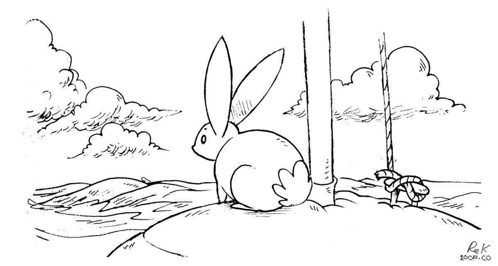
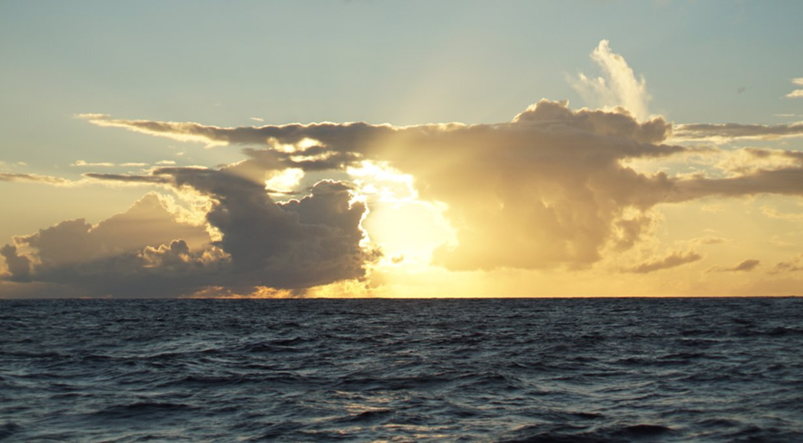
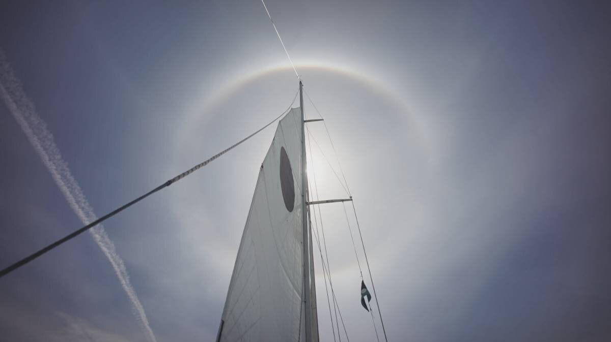
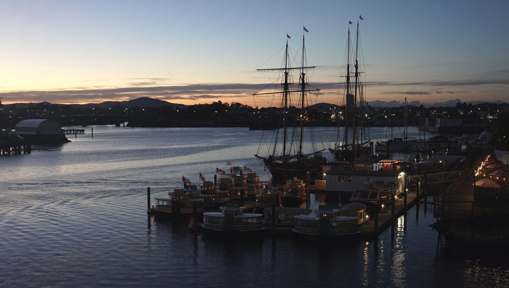

weather
forecast
Our favourite weather service is Windy, and while underway, we download weather maps(grib files) through the saildocs service with our satellite phone which we then process with PredictWind. We pick our weather carefully on passage, no sense in taking unnecessary risks. Sailing with a schedule is dangerous.
For information on storms brewing in the Pacific and Atlantic, as well as passage advice in the South Pacific, we enjoy reading MetBob.
squalls

Why do some sailors fear being becalmed at sea? Before we made the Pacific jump, some admitted carrying enough fuel to carry them across an ocean, and that in quiet times they wouldn't hesitate to use the Iron Wind. We think this is unnecessary. Squalls are not that scary, not if you're ready and know what to expect.
Squalls bring sudden high winds and rain in passing. They usually blow at around 25 kn (46 km/h) to 40 kn and last around 30 minutes. They are easy to see from a distance, big puffy cumulonimbus clouds, with dark bottoms and a skirt of rain. Another tell-tale sign of their approach is a change in the surrounding air temperature. The air becomes noticeably cool.
Squalls do not move with the prevailing winds, but at an angle to them, and can affect a boat even when a good distance away. Whenever we see a suspicious formation on the horizon, we keep our eyes on it to track its progress, to see if our paths will cross. If it comes close, we alter course to aim for its periphery, as it is better than going straight through it. We also reduce sail, to lessen its effects. If the squall is too strong, we simply bear off and wait for it to pass.
Reefing the mainsail before darkness falls is especially important in areas prone to squalls. It ensures that the person on watch isn't overwhelmed, and that the person off-watch can sleep well. Squalls are visible at night too, especially if the moon is full and bright. We look for dark spots on the horizon, and try and see if we can see the sky underneath. If we can't, it meant the cloud has rain underneath it, and it is likely a squall. A dark mass moving contrary to the prevailing wind is also a good indicator of an approaching squall.
The doldrums is an area where prevailing winds converge, creating an area of perpetual calms. In such places we use squalls to move forward, effectively becoming storm chasers. Squalls are just another means of propulsion on a quiet ocean. We chase squalls for their wind and for their water. Water is not hard to come by when there are squalls around. We always make sure to have a bucket on deck to attach to the end of the boom to collect it.
sky reading
When reading the weather on a passage, don't rely solely on weather reports. Learn to use a barometer, and observe and study the sky.
Slow travel stretches time. It makes the world appear bigger, and it gives time to observe details. Clouds speak in shapes. The color of the sky, the direction of the wind, and the changes in temperature, all give clear signs that when read correctly, make it possible to know what's coming.
When clouds appear like rocks and towers, the Earth’s refreshed with frequent showers.
Anvil top cloud: Named for their likeness to an iron anvil, anvil clouds are the icy upper portions of cumulonimbus thunderstorm clouds that are caused by a rising of air in the lower portions of the atmosphere. When the rising air reaches 40,000-60,000 or more feet, it tends to spread out in a characteristic anvil shape. Generally, the taller the cumulonimbus cloud, the more severe the storm will be.
The anvil top of a cumulonimbus cloud is actually caused by it hitting the top of the stratosphere—the second layer of the atmosphere. Since this layer acts as a "cap" to convection (the cooler temperatures at its top discourage thunderstorms (convection), the tops of storm clouds have nowhere to go but spread outward.
At sea, keep your eyes on the clouds. If you notice a cumulonimbus cloud with an anvil top cloud forming, and that it is pointing toward you, reef your sails, as the weather could get very nasty. If the wind is strong, the anvil will shear off in the direction the wind is blowing.
A ring around the sun or moon, means that rain will come real soon.
A ring around the moon: A halo forming around the sun, or moon, is caused by the refraction of sunlight, or moonlight, by ice crystals in high altitudes. Moisture forming at such heights is indicative that is moving downwards, and that an active weather system is coming. See 22° halo, and see a video we took of a 22° halo(YouTube) we saw during a sail in July 2024.
Mackerel skies and mares’ tails, make tall ships carry low sails.
Cirrocumulus clouds: Cirrocumulus clouds, or 'mare's tails' and 'mackerel scales', indicate an approaching warm front, with veering winds (clocking around from NE and E over to SW and W) with rain.
Red sky at night: In the northern hemisphere, as the sun sets, light shines through the lower atmosphere which is full of dust, salt, smoke and pollution. The particles scatter the shorter wavelengths of light at the blue end of the spectrum, leaving only the longer wavelengths (at the red end of the spectrum) to shine through. In a high-pressure area, air sinks and holds air contaminants near the earth, making the sunset even more red.
Red sky in the morning: A red sky in the eastern morning sky occurs for the same reasons as a red sky at night, but then the high pressure region has already passed from West to East, and may indicate an area of low pressure is coming. Low pressure systems bring clouds, rain and storms.

Other indicators of deteriorating weather:
- Reduction in visibility
- Direction of wind, shifting from N > E, or from E > S (cold front).
- Clouds moving in different direction, at different heights indicate shifting winds and approaching storm fronts.
- Cumulus begin to develop vertically and darken
- Sky is dark and threatening to the West.
- Clouds increasing in numbers, moving rapidly across the sky.
Indicators of impending strong winds:
- Yellow sunset
- Light, scattered clouds alone in a clear sky
- Sharp, clearly defined edges to clouds
- Unusually bright stars
- Major changes in the temperature
Indicators of impending precipitation:
- Distant objects seem to stand above the horizon
- Sounds are very clear and can be heard for great distances
- Transparent veil-like cirrus clouds thicken, ceiling lowers
- Hazy and sticky air. Rain may occur in 18-36 hours
- Halo around the sun or moon
- Increasing South wind with clouds moving from the West
- Wind (especially North wind) shifting to West and then South
- Steadily falling barometer
- Pale sunset
- Red sky to the West at dawn
- No dew after a hot day
Indicators of continuing fair weather:
- Early morning fog that clears
- Gentle wind from the West or Northwest
- Barometer steady or rising slightly
- Red sky to East with clear sky to the West at sunset
- Bright moon and light breeze at night
- Heavy dew or frost.
- Clear blue morning sky to West
- Clouds dot the afternoon summer sky

Indicators of clearing weather:
- Cloud bases rise
- Smoke from stacks rise
- Wind shifts to West, especially from East through South
- Barometer rises quickly
- A cold front has passed in the past 4 to 7 hours
- Gray early morning sky shows signs of clearing
- Morning fog or dew
- Rain stopping and clouds breaking away at sunset
Source: Indicators of weather courtesy of Larry and Susan Macdonald. Their wonderful website came offline this year (2020), and we've retrieved some of the content using Wayback Machine.
twilight
Twilight is the time before the sun sets, as the sky goes darker every hour. The order of twilight is reversed when it rises at the start of the day, growing from dark to bright. The lower the sun sits on the horizon, the dimmer the twilight, it is only when the sun reaches 18° below the horizon that night time begins. There are 3 distinct phases of twilight:
The cricket sang, and set the sun, and workmen finished, one by one, their seam the day upon. The low grass loaded with the dew, the twilight stood as strangers do, with hat in hand, polite and new, to stay as if, or go. A vastness, as a neighbor, came — a wisdom without face or name, a peace, as hemispheres at home — and so the night became.Emily Dickinson
- Civil. Nearest to the horizon (6° below the horizon).
- Nautical. When the geometric center of the sun is between 6° and 12° below the horizon.
- Astronomical. Farthest from the horizon (12° and 18° below the horizon).
During nautical twilight, sailors guided by stars can take reliable readings in the sky, and can discern the horizon for reference.
If sailing at latitudes greater than 48°34' North or South, on dates near and around the summer solstice (June 21st in Northern Hemisphere or December 21st in Southern Hemisphere), twilight persists from sunrise to sunset. During that time of the year complete darkness does not occur because the sun doesn't sink more than 18 below the horizon.
When at either Poles, around winter solstice, the solar declination changes slowly and results in several weeks of complete darkness. The further you get from the Poles, the more twilight you'll experience on the same dates.
barometer

When the glass falls low, prepare for a blow; when the glass is high, let your kites fly.
A good barometer is a lifesaver on a boat. At sea, record the barometer readings every hour. If you see any sudden changes, this is telling of a change in weather. The larger the barometric change, the more extreme the weather change.
Aneroid barometers: Inside an aneroid barometer (aneroid = without fluid) is a small capsule. This capsule has had the air pumped out of it. When the air pressure rises, the sides of the capsule are compressed. The capsule is attached to levers which move a needle as the air pressure squeezes the capsule. A dial behind the needle tells you the air pressure and altitude or weather forecast. They are less accurate than mercurial barometers.
Wonder if your barometer is working? You can find out using a plastic bag. The idea is that if you seal it in with a pocket of air, and press on the bag, if the unit isn't faulty, the needle will move clockwise as the pressure within the bag changes.
beaufort scale
The Beaufort Scale of Wind Force was developed in 1805 by Admiral Sir Francis Beaufort as a means for sailors to gauge wind speeds through visual observations of the sea state.
The scale runs from Force 0 (calm) to Force 12 (Hurricane).
| Force | Wind (Knots) | Classification | Wind Effect |
|---|---|---|---|
| 0 | <1 | Calm | Sea surface smooth and mirror-like. |
| 1 | 1-3 | Calm | Scaly ripples, no foam crests. |
| 2 | 4-6 | Light Breeze | Small wavelets, crests glassy, no breaking. |
| 3 | 7-10 | Gentle Breeze | Large wavelets, crests begin to break, scattered whitecaps. |
| 4 | 11-16 | Moderate Breeze | Small waves 1-4 ft. becoming longer, numerous whitecaps. |
| 5 | 17-21 | Fresh Breeze | Moderate waves 4-8 ft taking longer form, many whitecaps, some spray. |
| 6 | 22-27 | Strong Breeze | Larger waves 8-13 ft, whitecaps common, more spray. |
| 7 | 28-33 | Near Gale | Sea heaps up, waves 13-20 ft, white foam streaks off breakers. |
| 8 | 34-40 | Gale | Moderately high (13-20 ft) waves of greater length, edges of crests begin to break into spindrift, foam blown in streaks. |
| 9 | 41-47 | Strong Gale | High waves (20 ft), sea begins to roll, dense streaks of foam, spray may reduce visibility. |
| 10 | 48-55 | Storm | Very high waves (20-30 ft) with overhanging crests, sea white with densely blown foam, heavy rolling, lowered visibility. |
| 11 | 56-63 | Violent Storm | Exceptionally high (30-45 ft) waves, foam patches cover sea, visibility more reduced. |
| 12 | 64+ | Hurricane | Air filled with foam, waves over 45 ft, sea completely white with driving spray, visibility greatly reduced. |
This is the scale that we use in our book Busy Doing Nothing.